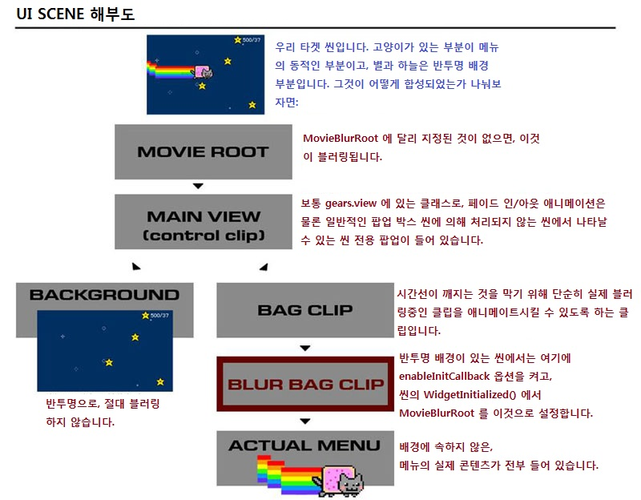

UDN
Search public documentation:
ScaleformContentGuideKR
English Translation
日本語訳
中国翻译
Interested in the Unreal Engine?
Visit the Unreal Technology site.
Looking for jobs and company info?
Check out the Epic games site.
Questions about support via UDN?
Contact the UDN Staff
日本語訳
中国翻译
Interested in the Unreal Engine?
Visit the Unreal Technology site.
Looking for jobs and company info?
Check out the Epic games site.
Questions about support via UDN?
Contact the UDN Staff
스케일폼 콘텐츠 가이드
문서 변경내역: Jeff Wilson 작성. 홍성진 번역.
개요
언리얼 엔진 3 에 Scaleform GFx 가 통합되어 Adobe Flash Professional 에 내장된 인터페이스와 메뉴를 HUD 와 메뉴로 사용할 수 있게 되었습니다. 이 글은 Scaleform GFx 시스템을 사용하는 아티스트나 레벨 디자이너를 대상으로 콘텐츠와 디자인 측면에 집중된 안내서입니다. 스케일폼과 플래시를 사용하여 UI 를 만들고, 그것을 언리얼 엔진 3 의 레벨에서 어떻게 사용하는지에 대해 다뤄 보겠습니다.
CLIK 컴포넌트 작업하기
라이브러리에 새 CLIK 오브젝트 추가하기
라이브러리에 새로운 CLIK 오브젝트를 추가하는 방법은 두 가지 있습니다. 미리 빌드된 파일에서 오브젝트를 복사하거나, 무비클립에 GFx 클래스를 할당하는 것입니다.복사해서 붙여넣기 방법
- Adobe Flash Professional CS4 에서 \UnrealEngine3\Development\Flash\CLIK\components 에 있는 CLIK_Components.fla 를 엽니다.
- 라이브러리에 있는 오브젝트 중 하나를 선택하고 복사한 다음 파일에 붙여넣습니다.
- Component Inspector (Shift+F7) 를 열어 스테이지에 가져온 CLIK 오브젝트에 연관된 프로퍼티와 값을 확인합니다.
기존 무비 클립에 CLIK 클래스 할당하기
무비 클립에 CLIK 클래스를 할당하는 것도 가능합니다. 커스텀 함수성을 추가하려거나, 스테이트 변화 없는 단순한 버튼만 필요한 경우에 좋습니다.- 라이브러리의 무비 클립에 우클릭하고 Properties 를 선택합니다.
- 체크박스를 통해 Export for ActionScript 를 켭니다.
- 클래스 필드에서 사용하려는 클래스를 입력합니다. (예 gfx.controls.Button)
- OK 를 클릭합니다.
- 오브젝트에 다시 한 번 우클릭한 후 "Component Definition..." 을 엽니다.
- "클래스" 필드에 Properties 에 할당한 것과 같은 클래스명을 입력합니다. (gfx.controls.Button).
- OK 를 클릭합니다.
CLIK 오브젝트 복제 - 점검사항
라이브러리 안에 복제된 컴포넌트는 클래스와 컴포넌트 클래스 정보를 유지하지 않아, 연결 식별자(linkage identifier)와도 자동으로 붙는 이름 문제가 약간 생깁니다. 복제 이후, 또는 초기 셋업 이후에 CLIK 오브젝트가 제대로 설정되었는지 확인해 보는 간단한 점검사항입니다:- CLIK 클래스는 자체 프로퍼티 안에 정의해 줘야 하며, Export for ActionScript 가 체크되어 있어야 합니다. Adobe Flash 안에서 복제를 할 때, 이 프로퍼티들은 복제하려는 원본 라이브러리 오브젝트에서 복사되지 않습니다.
- 컴포넌트 정의 역시 설정해 줘야 합니다. 복제 도중 이 정보는 원본에서 복사되지 않습니다.
- 식별자 이름이 오브젝트 이름과 같은지 확인합니다.
콘텐츠 실전 사례
씬 구조

위에 빨강 Bag Clip 부분도 매우 단순하지만, 반드시 필요합니다. 문제는 프로그래밍적으로 뭔가를 블러링하면 "타임라인을 깨뜨리게" 되어, 애니메이션이 튀거나 예상치 못한 스테이트에 빠지기도 합니다. 즉 여분의 레이어를 추가(, 저희 용어로는 "Bagging") 하여, 시간선상에 절대 직접 애니메이트되지 않는 클립만 블러링되도록 합니다. 이 레벨 위 아래의 클립은 애니메이트되도, 블러링되고 있는 실제 레벨 클립 그 자체는 절대 애니메이트되지 않습니다. 실수를 통해 얻은 귀중한 교훈입니다. 시간선상에 애니메이트되는 클립에 대해서 코드를 통해 블러, 알파, 위치 변수를 혹시라도 변경했다, 그랬다간 더 이상 예상대로 작동하지 않습니다! 개발 과정에서 정말 힘들게 배운 것 중 하나로, 사서 고생하지 마시고 하지 말라면 마세요! 의심가면, 배깅!스케일폼에 키즈멧 사용하기
키즈멧으로 무비 열기
키즈멧에서 무비를 열려면, Open GFx Movie 액션 (New Action > GFx UI > Open GFx Movie) 을 만들고 SWF 를 Movie 프로퍼티에, 무비를 소유할 무비 플레이어 클래스를 Movie Player Class 프로퍼티에 할당해 주기만 하면 됩니다. 아래와 같습니다: 무비를 열 플레이어는 Player Owner 변수 링크에 연결되어 있어야 합니다.
프로퍼티
무비를 열 플레이어는 Player Owner 변수 링크에 연결되어 있어야 합니다.
프로퍼티
- CaptureInput 입력 캡처
- 체크하면 무비는 디폴트로 CaptureKeys 배열에 나열된 키에 대한 입력을 캡처합니다.
- CaptureKeys 키 캡처
- CaptureInput 이 체크되면, 이 배열에 나열된 키가 GFx 무비로 전송됩니다.
- DisplayWithHUDOff HUD 가 꺼졌어도 표시
- 이 무비를 HUD 가 나타나지 않을때로 표시할 것인지 입니다. (HUD 가 아닌 유저 인터페이스 무비에 좋습니다)
- Movie 무비
- 재생하려는 무비(애셋으로 엔진에 임포트된 SWF 파일)로의 리퍼런스입니다.
- MoviePlayerClass 무비 플레이어 클래스
- (고급) 사용하려는 무비에 대한 함수성을 캡슐화시킨 UnrealScript 클래스가 있는 경우, 이 목록에서 선택합니다. 없으면 디폴트 옵션은 GFxMoviePlayer 입니다.
- RenderTexture 렌더 텍스처
- (고급) 이 무비를 전체화면 보다는 월드에서 사용할 수 있는 텍스처 리소스로 렌더하려는 경우, 여기에 지정합니다. 아무것도 지정하지 않으면 무비는 화면에 렌더됩니다.
- StartPaused 일시정지로 시작
- 체크하면 무비는 디폴트로 재생 시작되지 않으며, 스크립트를 통해 수동으로 시작시켜줘야 합니다.
- TakeFocus 포커스 받음
- 체크하면 GFx 무비가 열릴 때 화면 콘트롤 포커스를 받습니다.
키즈멧으로 무비 닫기
키즈멧을 통해 무비를 닫으려면 Close GFx Movie 액션을 사용하면 됩니다. 먼저 Object 변수에 닫으려는 무비로의 리퍼런스를 저장해 두기는 해야 합니다. 이 리퍼런스는 새 무비를 열 때 Open GFx Movie 액션의 Movie Player 변수 링크에서 얻습니다. 프로퍼티
프로퍼티
- Unload 언로드
- 체크되면 무비가 닫힐 때 메모리에서 언로드합니다.
키즈멧에서 ActionScript 함수 호출
키즈멧에서 열린 SWF 무비에 있는 ActionScript 메서드를 호출할 수 있습니다. 예를 들어 다음 ActionScript 함수가 열린 무비에 있다면:
function myActionScriptMethod(MyString:String, MyBool:Boolean)
{
// 재밌는 작업을 한다!
}
 메서드에 파라미터를 전해주려면, 호출하려는 ActionScript 함수의 각 인수에 대한 인수 배열에 항목을 추가해야 합니다. 각 항목에는 수정할 수 있는 필드가 넷 있습니다.
메서드에 파라미터를 전해주려면, 호출하려는 ActionScript 함수의 각 인수에 대한 인수 배열에 항목을 추가해야 합니다. 각 항목에는 수정할 수 있는 필드가 넷 있습니다.
- Type
- 해당 슬롯에 전해주려는 파라미터의 종류를 나타냅니다. 가능한 종류는 AS_String (S), AS_Boolean (B), AS_Number (N) 입니다.
- S
- 전해주려는 문자열 데이터입니다.
- B
- 전해주려는 불리언 데이터입니다.
- N
- 전해주려는 데이터 갯수입니다.
키즈멧으로 GFx 에서 ActionScript 호출 받기
ActionScript 는 키즈멧에서 FSCommands 를 사용하여 이벤트를 트리거시킵니다. 그 작동 방식은 키즈멧의 다른 이벤트와 같습니다. 예를 들어:
fscommand("myFSCommand");

값 구하고 설정하기
키즈멧을 통해서 열린 스케일폼 무비 내 오브젝트에 속한 변수의 값은 GFx GetVariable 과 GFx SetVariable 액션을 통해 열어보고 설정할 수 있습니다. 프로퍼티
프로퍼티
- Variable 변수
- 값을 구하거나 설정할 변수의 이름입니다.
스케일폼의 폰트
!"#$%&'()*+,-./0123456789:;<=>?@ABCDEFGHIJKLMNOPQRSTUVWXYZ[\]^_`abcdefghijklmnopqrstuvwxyz{|}~
€„ˆ›Œ‘’“”–—˜™›œ¡¢£¨©ª«®°²³´¹º»¿ÀÁÂÃÄÅÆÇÈÉÊËÌÍÎÏÑÒÓÔÕÖØÙÚÛÜßàáâãäåæçèéêëìíîïñòóôõöøùúûüýÝ¥§Ÿ…
A;a;C'c'C(c(D(d(E;e;E(e(L'l'??N'n'N(n(O"o"R(r(S's'ŠšT(t(U*u*U"u"Z'z'Z.z.Žž
??????????????????????????????????????????????????????????????????
!"#$%&'()*+,-./0123456789:;<=>?@ABCDEFGHIJKLMNOPQRSTUVWXYZ[\]^_`abcdefghijklmnopqrstuvwxyz{|}~ €„ˆ›Œ‘’“”–—˜™›œ¡¢£¨©ª«®°²³´¹º»¿ÀÁÂÃÄÅÆÇÈÉÊËÌÍÎÏÑÒÓÔÕÖØÙÚÛÜßàáâãäåæçèéêëìíîïñòóôõöøùúûüýÝ¥§Ÿ…A;a;C'c'C(c(D(d(E;e;E(e(L'l'??N'n'N(n(O"o"R(r(S's'ŠšT(t(U*u*U"u"Z'z'Z.z.Žž???????????????????????????????????????????????????????????????????A-a-A(a(??E-e-E(e(E.e.G(g(G,g,I-i-I;i;I.?K,k,L,l,L(l(N,n,O-o-O(o(ŒœR'r'R,r,S's'S,s,T,t,U-u-U*u*U;u; S,s,T,t,
°
ª
- UFonts: 언리얼 비트맵 폰트로, 렌더링 속도가 항상 빠릅니다! 디스턴스 필드 (흑백 전용, 스케일에 강하지만 날카로운 모서리가 보존되지 않음), RGBA 비트맵 (스케일은 약하지만 풀 컬러) 이 지원됩니다.
- 임베디드 벡터 폰트 (fonts_en.swf, fonts_*.swf) - 렌더링 속도가 가끔 빠릅니다. 동적인 폰트 캐시때문에 퍼포먼스 문제가 생길 수 있으며, 효율적으로 업데이트되지 않습니다. RGBA 가 지원되지 않습니다.
- 시스템 폰트 - 임베디드 폰트와 마찬가지이나 OS 에서 찾아봅니다. 완벽 현지화가 필요한 PC 게임에 좋습니다.
Localization/GFxUI.int 파일은 폰트의 심볼 이름을 실제 사용할 폰트 이름과 매핑시키는데, 어떤 폰트 방식을 사용하기로 했는가에 따라 다음 규칙 중 하나를 따릅니다:
- UFonts - UFont 리소스를 사용할 경로입니다. 예: GearFonts.MyFont
- 벡터 폰트 - en.swf 폰트에서 익스포트된 벡터 폰트 이름입니다. 예: Arial, Bold
- 시스템 폰트 - TODO
[Fonts] NormalFont=Bitstream Vera Sans BoldFont=Bitstream Vera Sans,Bold SmallFont=Bitstream Vera Sans TitleFont=Bitstream Vera Sans,Bold
흔한 폰트 에러
> Missing font "$NormalFont" in "_level0.PauseMenuSP.PartyPanelLoaderPanel.PartyPanel.PPListItem1.PlayerIcon.textField". Search log: > Searching for font: "$NormalFont" > Movie resource: "$NormalFont" not found. > Imports : "$NormalFont" not found. > : "../UI_Common/gfxfontlib.swf", "..\UI_Common\UI_Common_Assets.swf". > Exported : "$NormalFont" not found. > Searching GFxFontProvider: "$NormalFont" not found. > Font not found. > Error: Resource for font id = 12 is not found in text field id = 52, def text = 'OPTION' > Error: Resource for font id = 12 is not found in text field id = 52, def text = 'OPTION' > Error: Resource for font id = 12 is not found in text field id = 59, def text = 'textField'
- UI_Common/fonts_en.fla - 언어에 대한 폰트와 글리프
- UI_Common/gfxfontlib.fla - 폰트 심볼을 정의하는 라이브러리 SWF ($NormalFont, $LargeFont 등)
- UI_Common/UI_Common_Assets.fla - 베이스 위젯의 공유된 공용 애셋 라이브러리
- UI_FrontEnd/UI_CommonFrontEndAssets.fla - 공유된 프론트 엔드 애셋
$NormalFont 심볼과 쏟아지는 에러가 없다고 말하는 것들 등등이 포함되어 있습니다.
씬 테스팅과 디버깅
디버깅용 GFx 렌더링 켜고 끄기
구형 UI 시스템에서 신형 GFx UI 시스템으로의 전환기에, 신형 UI 와 구형 UI 를 사용하는 사람들이 동시에 작업을 할 때는 GFx UI 렌더링을 끄는 기능이 있으면 좋을 것입니다. 그때문에 디버깅용으로 GFx UI 가 렌더링되어 입력을 받지 못하도록 하는 간단한 불리언을 추가했습니다. 변경하려면 게임의 Engine.ini 파일에 다음 불리언을 수정합니다:[Engine.GameViewportClient] bDebugNoGFxUI=false
테스트용 엔진 실행 함수
엔진에서 SWF 무비를 들여다보는 아티스트의 삶을 편하게 해 드리고자, 디버깅 함수를 약간 추가했습니다. 이 함수는 별달리 지정하지 않으면 현재 GFx 에 의해 렌더되고 있는 최상위 무비에서 작동합니다.- GFxGotoAndPlay Path FrameLabel - 지정된 무비 클립의 지정된 프레임 라벨로 점프하여 재생합니다.
- GFxGotoAndStop Path FrameLabel - 지정된 무비 클립의 지정된 프레임 라벨에, 정지상태로 점프합니다.
- GFxInvoke Path FunctionName - 지정된 경로상에 FunctionName 으로 ActionScript 함수를 호출합니다.
- GFxRestartMovie - 렌더링중인 최상위 무비 재생을 재시작시킵니다.